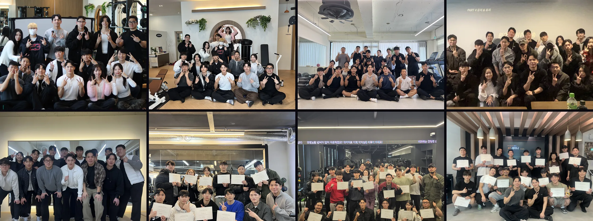

열심히는 하고 있었다
블로그도 쓰고 릴스도 올립니다. 그런데 회원이 왜 왔는지, 왜 떠났는지는 모르죠.
회원은
순서대로 옵니다
우연히 오는 회원은 없습니다. 오는 길이 정해져 있거든요.
한 곳에서 끊깁니다
발견하는 곳, 확인하는 곳, 확신하는 곳, 그리고 예약하는 곳입니다.
유치가 곧 유지고
유지가 곧 유치다
잘 남은 회원이 다음 회원을 데려옵니다. 그 고리를 만드는 게 이날 하는 일이죠.
지금 어디쯤입니까?
회원이 아예 안 붙습니다
늘긴 하는데 거기서 멈췄습니다
수업은 찼는데 수입은 그대로입니다
연차는 다른데, 막힌 자리는 같습니다
회원은 블로그에서 발견하고 인스타에서 확인하고 리뷰에서 확신한 다음에야 예약을 누릅니다 셋 중 하나만 비어도 거기서 멈춥니다
처음 해보는 자리가 아닙니다. 아홉 번 하면서 다듬었거든요.
낮 12시부터 5시까지, 쉬는 시간 없이 한 번에 갑니다. 점심 드시고 오시면 저녁 전에 끝나거든요.
지금 단톡방에 들어와 있는 사람 수 그대로입니다. 끝나고도 물어볼 데가 남습니다.
이날 하는 일
발견·확인·확신을 하나씩, 그리고 셋을 잇는 법
블로그
수업은 좋은데 검색에 안 걸립니다. 회원이 실제로 치는 검색어부터 다시 잡습니다.
인스타그램
보고는 가는데 고를 때 후보에 없습니다. 유치용 계정과 브랜딩용 계정을 갈라 놓습니다.
리뷰와 플레이스
결과는 냈는데 남은 기록이 없습니다. 리뷰가 저절로 쌓이는 구조를 짭니다.
셋을 하나로
따로 놀면 셋 다 헛심이거든요. 셋을 이어 붙이면 새로 오는 사람도, 다시 오는 사람도 같은 길에서 옵니다.

지나간 자리마다 사람이 남았습니다 돌아갈 때는 다음 달에 어디에 뭘 올릴지가 정해져 있거든요
축구 선수
몸 쓰는 일로 밥벌이를 시작했습니다.
비브레PT 대표
직원으로 시작해 중간관리자를 거쳐 3년 차에 제 센터를 열었습니다. 지금은 10년 차인데, 여전히 현장에 있고요.
대한트레이닝교육협회 회장
전국 트레이너와 센터 대표를 가르칩니다.
안 맞는 분부터 말씀드립니다
한 번에 뒤집을 방법을 찾는 분,
조회수나 팔로워를 늘리고 싶은 분
순서대로 쌓을 준비가 된 분,
유명해지기보다 유능해지고 싶은 분
진행 정보
- 일시
- 11~12월 중 · 낮 12시부터 5시까지날짜가 정해지면 등록하신 분들께 먼저 알려 드립니다. 중간에 쉬는 시간 없이 한 번에 갑니다
- 장소
- 정하는 중입니다날짜와 함께 알려 드립니다. 주차도 확정 명단이 나온 뒤 단톡방에서 안내드립니다
- 정원
- 소수만 받습니다한 사람씩 자기 화면을 열어 보기 때문입니다. 인원은 장소에 따라 달라지고, 확정되면 알려 드립니다
- 대상
- 운동을 가르치는 분헬스든 필라테스든 상관없습니다. 센터 소속이든 프리랜서든, 연차도 묻지 않습니다
- 준비물
- 노트북이나 공책그 자리에서 적고 고치기 때문에 필기도구는 챙겨 오시는 게 좋습니다
- 다녀간 분들
- 인스타그램에 정리해 두었습니다하이라이트에 수강생 이야기를 모아 두었습니다
- 참석비
- 등록서에서 확인금액과 계좌는 등록서 첫 화면에 있습니다. 입금하신 뒤에 등록서를 작성해 주세요. 날짜를 안내받으신 뒤 일정이 안 맞으시면 전액 돌려드립니다
환불 규정
날짜와 장소를 안내받으신 뒤 일정이 안 맞으시면, 안내받은 날부터 7일 안에 말씀해 주시면 전액 돌려드립니다.
날짜가 정해진 뒤에는 아래 기준을 따릅니다. 기준은 세미나 당일 0시이고, 취소 말씀이 저에게 도착한 때로 셉니다.
| 언제 | 어떻게 |
|---|---|
| 세미나 8일 전까지 | 전액 돌려드립니다 |
| 7일 전 ~ 3일 전 | 70% 환불, 또는 다음 회차로 전액 이월 |
| 2일 전 ~ 전날 | 다음 회차로 전액 이월 |
| 당일 · 안 오신 경우 | 환불과 이월 모두 어렵습니다 |
등록하신 지 7일이 안 되셨다면 위 표와 상관없이 전액 돌려드립니다. 세미나 전날까지요. 법으로 정해진 권리입니다.
못 오시게 되면 다른 트레이너에게 자리를 넘기실 수 있습니다. 세미나 2일 전까지 오실 분 성함만 알려 주시면 됩니다. 이게 제일 간단하더라고요.
- 다음 회차 이월은 한 번, 6개월 안의 회차까지입니다
- 제 사정으로 취소하거나 날짜를 옮기면 전액 돌려드립니다
4T는 For Trainer입니다. 영어로 four 와 for 가 같은 소리라서, 트레이너를 위한 자리라는 뜻으로 이름 앞에 붙였습니다.
실력을 더 쌓는 날이 아닙니다
순서를 바로잡는 날이죠. 돌아갈 때는 다음 달에 어디에 뭘 올릴지가 정해져 있습니다.
등록서 첫 화면에 금액과 계좌가 있습니다. 입금하신 뒤에 작성해 주세요.
다녀간 분들 이야기는 인스타그램 하이라이트에 모아 두었습니다. 궁금한 건 거기로 물어보셔도 됩니다.